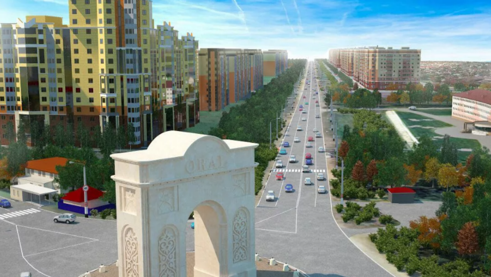

Северо-Западный Казахстан
НазадУральск, расположенный на западе Казахстана, является одним из старейших городов страны. Он был основан в 1620 году как военное укрепление для защиты русских границ от кочевников. Город находится на берегу реки Урал, что придаёт ему живописный вид и способствует развитию рыбной ловли и сельского хозяйства. Уральск славится своей многокультурностью, в нем живут представители различных национальностей, что отражается в архитектуре, традициях и кухне. Город известен своими историческими памятниками, такими как мечеть "Султанбек", и культурными событиями, включая фестивали и ярмарки. В Уральске также находится уникальный природный заповедник "Кобланк", где можно увидеть редкие виды растений и животных. Благодаря своему стратегически важному расположению и богатой истории, Уральск остаётся значимым центром экономики и культуры региона.
